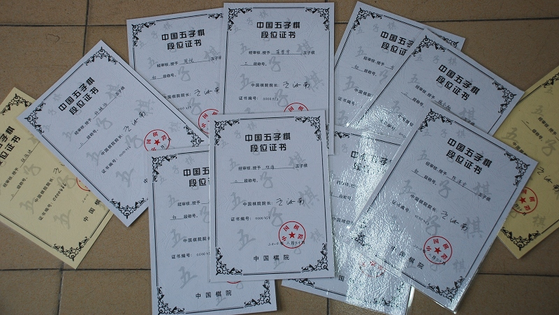

南通段位棋手名单
首页
江苏五子棋
#1 南通段位棋手名单 作者：有志青年 发表时间：2010-8-22 21:13:26
段位均由中国棋院授予
蒋哲宇 三段
施令驰 二段
邓伟 二段
纪香 二段
许姝怡 二段
方静 初段
石玉 初段
周悦 初段
李洋洋 初段
陈泽宇 初段
陆梦溪 二段
郭钒逸 二段
朱悦 初段
陈楠钰 初段
褚圣楠 初段
陈云敏 初段
顾玲 初段
李子珩 初段
唐世祺 初段
王姚瑶 初段
徐颖 初段
赵基智 初段
周楠 三段
胡嘉瑶 二段
黄超 二段
顾钰 初段
陈幸 初段
［ 被感动的人 于 2010-8-22 21:27:21 时奖励此帖[金币加 20 威望加1］
［此帖子已被 黄药师 在 2013-7-26 21:59:22 编辑过］
［此帖子已被 黄药师 在 2013-10-29 13:49:13 编辑过］
#2 Re:南通段位棋手名单 作者：被感动的人 发表时间：2010-8-22 21:27:52
 抓个机会奖励奖励你
抓个机会奖励奖励你
#3 Re:南通段位棋手名单 作者：黄药师 发表时间：2010-8-22 21:28:18
 这个马屁拍的！
这个马屁拍的！
#4 Re:南通段位棋手名单 作者：浩瀚铭剑 发表时间：2010-8-22 23:23:52
 现在这个社会不拍马屁是混不走的
现在这个社会不拍马屁是混不走的
#5 Re:南通段位棋手名单 作者：被感动的人 发表时间：2010-8-23 8:19:36
楼上两位可说错了，我是想在有志这个老大和地主跟前显示显示俺那一小点权限，他还欠我吃住行呢，我不要账该他给我拍马才对。
#6 Re:南通段位棋手名单 作者：裁决殿雪月 发表时间：2010-8-23 9:32:55
这理由找的……
#7 Re:南通段位棋手名单 作者：水月 发表时间：2010-8-23 15:32:08
施令驰怎么升得这么快。。。
嫉妒嫉妒～～～
#8 Re:南通段位棋手名单 作者：冷酒一杯 发表时间：2010-8-27 8:49:32
这里是不是都是小孩天才？
#9 Re:南通段位棋手名单 作者：屏蔽 发表时间：2010-8-27 9:21:31
少儿赛升段容易些。
以当前实力去全国赛的话，段级位评定一般会下降两档。
#10 Re:南通段位棋手名单 作者：极地剑客 发表时间：2010-8-27 17:50:27
纪香是美女的说~
#11 Re:南通段位棋手名单 作者：有志青年 发表时间：2010-8-28 12:20:57
极地连小mm都不放过？
#12 Re:南通段位棋手名单 作者：极地剑客 发表时间：2010-8-28 17:55:02
俺只是围观一下~其实我是好人~
#13 Re:南通段位棋手名单 作者：松痕 发表时间：2010-8-28 20:41:12
有次在QQ有人加我，让我教她下棋，我问她是不是美女，她说“我是小孩”
#14 Re:南通段位棋手名单 作者：有志青年 发表时间：2010-9-2 11:27:59
#15 Re:南通段位棋手名单 作者：苯酚 发表时间：2010-9-4 22:16:36
证书是11张，人10个？
#16 Re:Re:南通段位棋手名单 作者：黄药师 发表时间：2010-9-5 8:15:05
引用：
原文由 苯酚 发表于 2010-9-4 22:16:36 :
证书是11张，人10个？
这个应该是今年的
#17 Re:南通段位棋手名单 作者：霸王龙 发表时间：2010-12-1 12:13:23
这个马屁拍的太。。。。。。
#18 Re:南通段位棋手名单 作者：聚贤联盟特使 发表时间：2011-5-27 14:52:36
瞻仰下段位证书
#19 Re:Re:南通段位棋手名单 作者：小丸.net 发表时间：2011-5-27 23:07:59
引用：
原文由 极地剑客 发表于 2010-8-27 17:50:27 :
纪香是美女的说~
人家未成年，你不要打她的主意。。。。
#20 Re:Re:南通段位棋手名单 作者：梧桐风 发表时间：2011-5-28 22:19:36
引用：
原文由 松痕 发表于 2010-8-28 20:41:12 :
有次在QQ有人加我，让我教她下棋，我问她是不是美女，她说“我是小孩”
这话说的~
#21 Re:Re:Re:南通段位棋手名单 作者：屏蔽 发表时间：2011-5-28 22:24:20
引用：
原文由 小丸.net 发表于 2011-5-27 23:07:59 :
引用：
原文由 极地剑客 发表于 2010-8-27 17:50:27 :
纪香是美女的说~
人家未成年，你不要打她的主意。。。。
成年的不要……
#22 Re:南通段位棋手名单 作者：黄药师 发表时间：2013-7-26 22:00:05
已经更新至2013年
#23 Re:屏蔽【==Re:Re:Re:南通段位棋手名单==】 作者：圊籽 发表时间：2013-7-26 22:39:00
大师是萝莉控。柯芾蚩。
#24 Re:黄药师【==Re:南通段位棋手名单==】 作者：一休哥 发表时间：2013-7-28 22:48:46
目前是最新的么
#25 Re:南通段位棋手名单 作者：黄药师 发表时间：2013-7-28 22:57:27
应该是的
#26 Re:黄药师【==Re:南通段位棋手名单==】 作者：一休哥 发表时间：2013-7-29 11:54:44
有志兄的公子有没有榜上有名呀
#27 Re:屏蔽【==Re:南通段位棋手名单==】 作者：五子酷 发表时间：2013-7-29 16:53:49
引用：
原文由 屏蔽 发表于 2010-8-27 9:21:31 :
少儿赛升段容易些。
以当前实力去全国赛的话，段级位评定一般会下降两档。
非常同意你的看法，少儿赛段位明显比成人段位偏高，可能是为了鼓励一下孩子吧，今年12岁以下的少儿乙组冠军都给三段了。。。。
#28 Re:南通段位棋手名单 作者：活宝 发表时间：2013-10-6 21:56:29
张建业、戴宇轩两人是二段。周楠是三段。
这个有点问题。
徐老师说今年儿童甲组二三名、儿童乙组冠军是一级。
#29 Re:南通段位棋手名单 作者：活宝 发表时间：2013-10-6 21:56:48
男男女女
［此帖子已被 活宝 在 2013-10-6 21:59:23 编辑过］
#30 Re:南通段位棋手名单 作者：卢老师 发表时间：2013-11-11 12:33:47
南通乱搞，现在的少年乙组第一名就是以前的儿童组第一名。周楠三段?？张建业和戴宇轩是二段。
赵机智去年儿童乙组第二，今年第六，算去年的，那么应该是一级。女子比男子段位低一到二个级别，南通什么时候段位那么多?
今年有开会讨论关于段位的问题。以前没开会讨论，陈有志和顾亮就这样申请了？为了扶持五子棋发展？
完全乱搞。弄虚作假。周楠作为全国儿童组冠军，在宜兴的采访视频中发现还不会正确拿棋子，难道南通就会棋谱给学生去背？ 台州连续两年全少赛儿童组张珈玮倒数第一也会正确握子。不知道南通是如何培养学生的。
［此帖子已被 卢老师 在 2013-11-11 12:40:19 编辑过］
#31 Re:南通段位棋手名单 作者：猪小弟 发表时间：2013-11-11 13:00:47
阿弥陀佛，又有疯狗跑出来乱咬人了。谁家的？
握棋子还有正确错误之分，能否请教正确的握棋子动作应该是怎么样的。
［此帖子已被 猪小弟 在 2013-11-11 13:10:23 编辑过］
#32 Re:南通段位棋手名单 作者：活宝 发表时间：2013-11-13 10:57:36
五子酷，卢老师英雄所见略同，儿童组三段部符合中国棋院颁布的中国五子棋段为标准，这点我也是这么想的。楼上猪小弟败类一只，鉴定完毕。卢老师也没骂人啊，你怎么就骂人家疯狗呢。你才是疯狗呢。是不是？？？
#33 Re:南通段位棋手名单 作者：茗弈小蝴蝶 发表时间：2013-11-15 12:50:43
拿子正不正确重要吗？周楠下和了吴志琴。
#34 Re:南通段位棋手名单 作者：茗弈小蝴蝶 发表时间：2013-11-15 12:50:51
拿子正不正确重要吗？周楠下和了吴志琴。
#35 Re:南通段位棋手名单 作者：茗弈小蝴蝶 发表时间：2013-11-15 12:52:58
拿子正不正确重要吗？周楠下和了吴志琴。